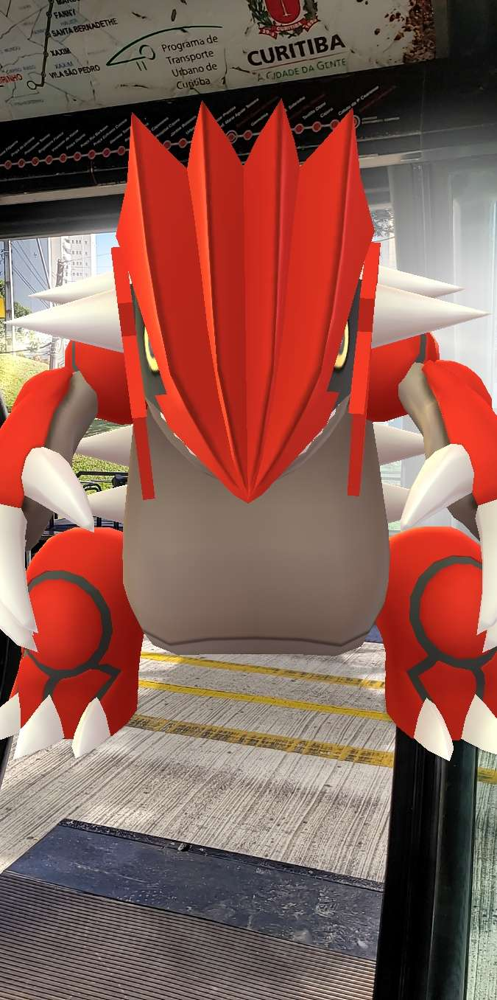
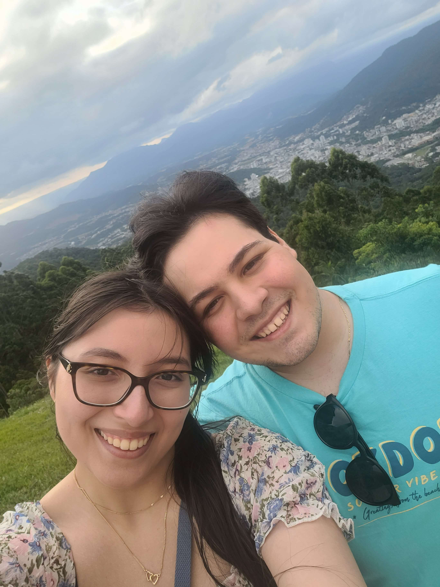
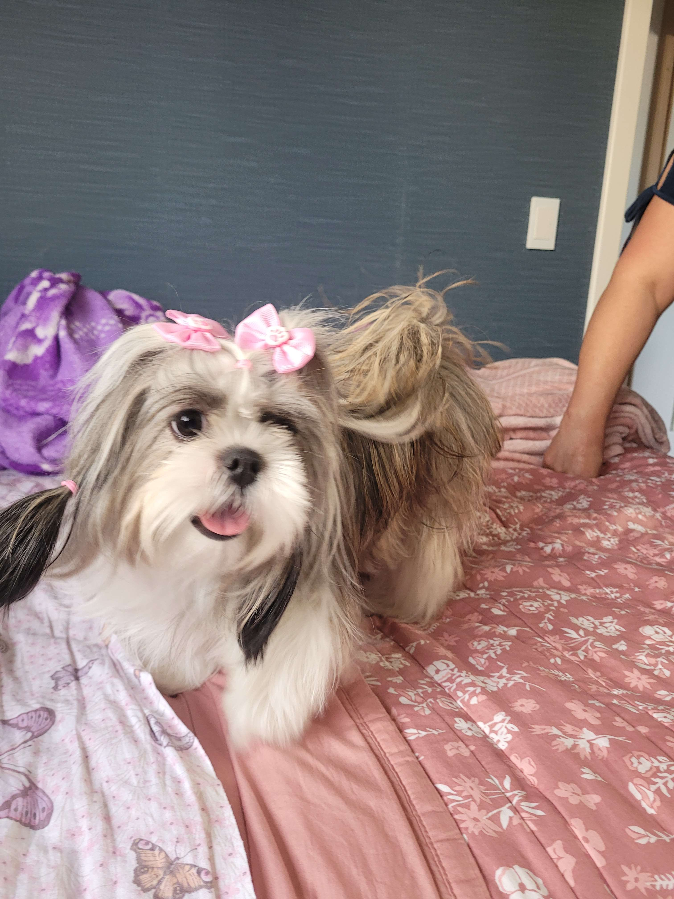

Jordan Verissimo Gruimarães dos Santos
Sobre
Sou aluno de Análise e Desenvolvimento de Sistemas com muita paixão pela área de TI e pretendo fazer pós na área de IA. Sou casado com uma esposa maravilhosa e estou estável financeiramente e psicologicamente. Sempre busco conhecimentos e experiências novas para enriquecer cada vez mais meu currículo!
Contatos
Meu Currículo
Este Site é atualmente meu primeiro e único projeto na área de TI. Espero que goste dele, irei aperfeiçoa-lo conforme ganho novos conhecimentos!
Hobbie: Jogar Pokémon Go e passear por estados e cidades
Eu gosto bastante de todo o universo de Pokémon e estou jogando muito Pokémon Go atualmente.

Hobbie: Passar tempo com minha esposa
Minha esposa está sempre comigo e me apoiando em tudo que eu faço, gosto bastante de passar tempo com ela e me divirto muito ao lado dela.

Hobbie: Brincar com minha cachorrinha Maya
Eu tenho uma cachorrinha chamada Maya que é muito nova e muito arteira, ela dá alegria para nossa casa e sempre gosta muito de brincar.
